CASGM: Co-Visible Area Guided Optical-SAR Matching with Significant Geometric Differences
Under review · ISPRS Journal of Photogrammetry and Remote Sensing — Second-round review
Abstract Synthetic aperture radar (SAR) satellite technology has advanced rapidly in both spatial resolution and platform diversity, making optical-SAR image matching a critical technique for multi-source remote sensing data fusion, change detection, and disaster monitoring. However, the widening resolution gap between heterogeneous SAR and optical sensors leads to significant geometric differences between image pairs. These differences, coupled with inherent cross-modal radiometric distortion and SAR speckle noise, make robust matching increasingly challenging. Existing multimodal datasets provide valuable optical–SAR imagery, but benchmark data that jointly support controlled resolution, scale, rotation, and overlap variations remain limited. We propose CASGM, an efficient optical–SAR matching method, and construct GeoMS-OS as a derived multi-resolution benchmark for controlled training and evaluation under significant geometric differences. GeoMS-OS processes and reorganizes existing optical–SAR data sources at four resolution levels (10/5/1/0.5 m) from multiple SAR platforms. Through a reproducible generation procedure, it provides 22.1K quality-controlled, pixel-aligned image pairs (1280×960 pixels) with configurable geometric transformations (scale ratios up to 4 and rotations of 0°×60°), organized into easy and hard subsets. Its purpose is to complement existing datasets by providing a consistent experimental setting for the present study. CASGM introduces a co-visible area identification mechanism to alleviate positive-sample scarcity under large-scale differences. It employs a hybrid feature extractor that combines MaRS with RepVGG. CASGM then applies a three-stage coarse-to-fine matching process to progressively refine the geometric transformation estimation. Extensive evaluations on GeoMS-OS and multiple public datasets demonstrate that CASGM outperforms state-of-the-art methods under large geometric transformations. Keywords: image matching; multimodal imagery; SAR; deep learning; geometric transformation; multi-resolution dataset.
Fig.1 Visual comparison of matching results. Green = correct, red = wrong.
Optical–SAR matching breaks down under large scale gaps and rotation. Handcrafted descriptors produce sparse and unstable correspondences, while recent learned matchers still leave many red (wrong) links. CASGM keeps dense, uniformly distributed green matches across all scenes, which is why it is placed first as the headline result: the co-visible prior removes cross-region false matches before fine matching even starts.
DOUBLE-COLUMN · Fig.2
2 · GeoMS-OS Dataset
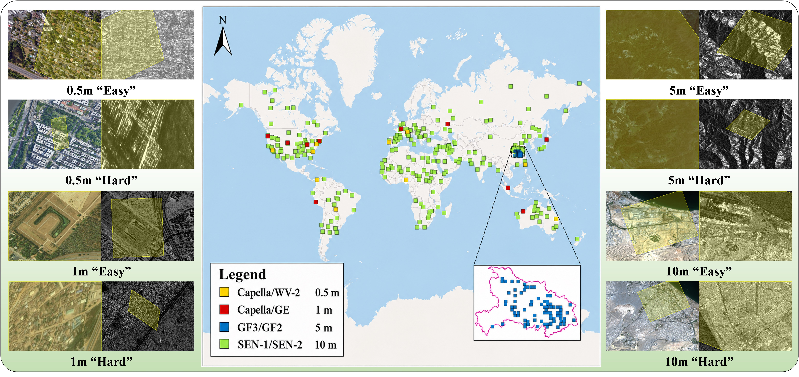
Fig.2 Geographic distribution of GeoMS-OS. Yellow = co-visible area between optical and SAR.
GeoMS-OS is built from multi-source, multi-resolution, multi-temporal optical and SAR imagery with global coverage. Each pair carries a ground-truth homography plus a co-visible mask, and is split into easy (scale 1×) and hard (scale 2×) subsets. The yellow overlays show that co-visible regions are often small and off-center — the key difficulty the dataset is designed to expose.
Split
Scale ratio
Pairs
Annotation
Easy train / test
1×
large-scale
homography + co-visible mask
Hard train / test
2×
large-scale
homography + co-visible mask
Generalization
1× / 2×
unseen regions
homography only
SINGLE-COLUMN · Fig.3
3 · Sample Generation
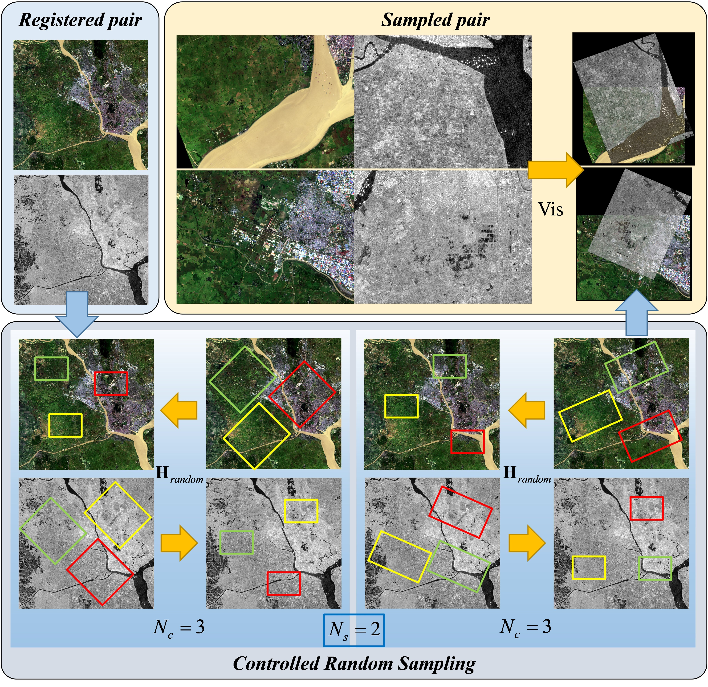
Fig.3 Controlled sample generation strategy.
Why it matters. Random cropping either leaks the answer or creates unmatchable pairs. The controlled strategy samples rotation, scale, and translation from explicit distributions so that every training pair has a known overlap and a known homography.
How to read it. Left-to-right: source image → geometric perturbation → co-visible mask computation → final optical–SAR pair. This guarantees balanced easy/hard coverage and makes the supervision signal exact, which directly lifts the generalization scores in Tables 2–3.
DOUBLE-COLUMN · Fig.4
4 · CASGM Architecture
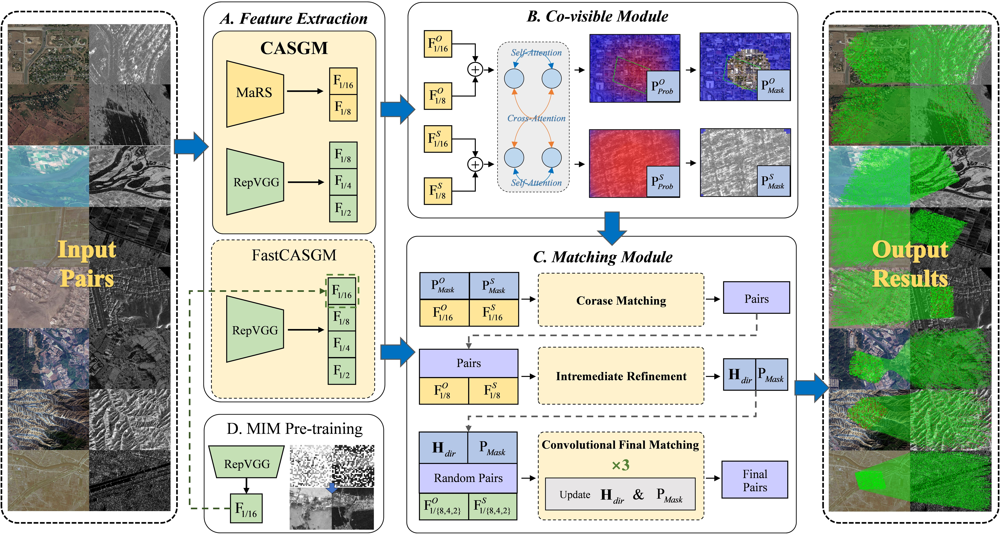
Fig.4 Overall architecture of CASGM.
The backbone extracts multi-scale features at 1/8, 1/4, and 1/2 resolutions. The Co-Visible Module (CVM) first predicts where the two images overlap; the intermediate refinement stage then builds coarse correspondences only inside that region; finally the CFM head refines them progressively from coarse to fine. Constraining every stage to the co-visible area is the central idea — it cuts the search space, suppresses repetitive-texture false matches, and lets the fine stages spend capacity where matches actually exist.
SINGLE-COLUMN · Fig.5
5 · Co-Visible Module (CVM)
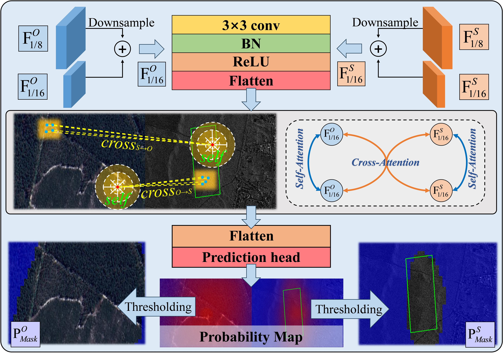
Fig.5 Architecture of the co-visible module.
Input ×output. Cross-attention fuses optical and SAR features, then a lightweight mask head predicts the co-visible probability map with threshold θcv.
Effect. Fig.8 shows CVM beats SCoDere and OETRre on mask IoU; the ablation table confirms removing CVM causes the largest NCM drop. A clean mask is a precondition for everything downstream.
DOUBLE-COLUMN · Fig.6
6 · CFM Workflow
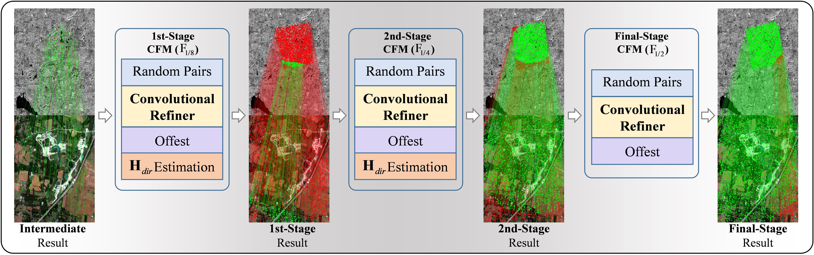
Fig.6 CFM workflow and progressive matching results (thresholds 8px ×4px; green = correct, red = error).
CFM refines matches stage by stage: starting from intermediate correspondences checked at 8 px, each finer level (F1/8 ×F1/4 ×F1/2) re-localizes keypoints inside small windows and re-scores them with θconf. Visualized at a strict 4-px threshold, green lines multiply and red lines vanish as resolution increases ×direct evidence that coarse-to-fine refinement inside the co-visible area converts rough alignment into pixel-accurate matches.
SINGLE-COLUMN · Fig.8
7 · Co-Visible Region Quality
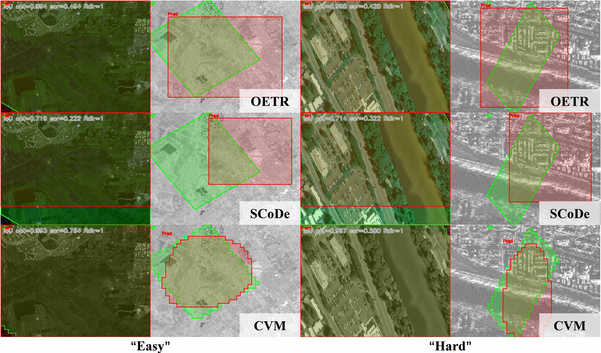
Fig.8 CVM vs SCoDere vs OETRre. Green = ground truth, red = prediction.
Reading the colors. Green is the ground-truth co-visible area warped by the true homography; red is each method's prediction. CVM's red mask hugs the green region tightly, while competitors leak into non-overlapping areas.
Why it decides the ranking. Every leaked pixel becomes a candidate false match. The tighter mask is the reason CASGM leads NCM and SR in the main tables.
DOUBLE-COLUMN · Fig.9 / Fig.10
8 · Results on GeoMS-OS (Easy & Hard)
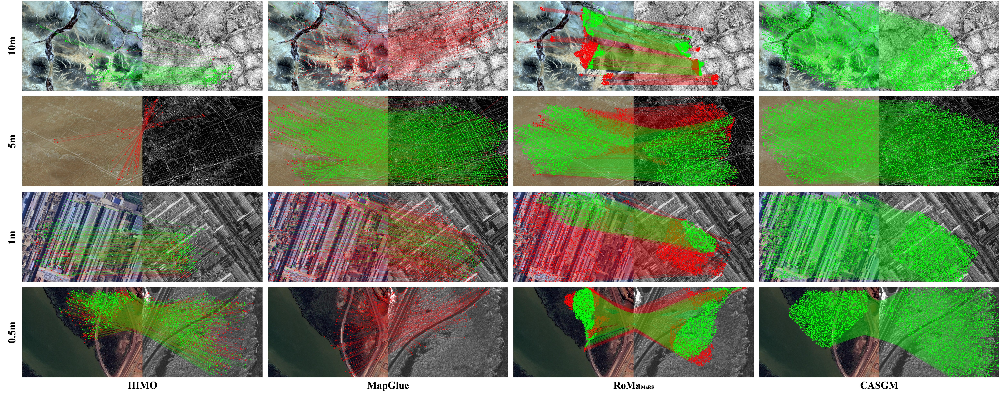
Fig.9 Matching on easy sets (scale 1×).
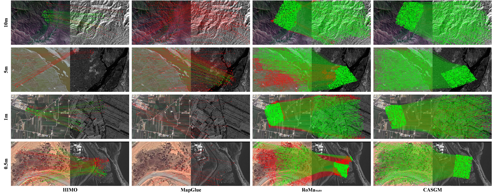
Fig.10 Matching on hard sets (scale 2×).
Easy (Fig.9, scale 1×). All strong baselines look plausible, but CASGM is denser and cleaner: green inliers cover the overlap uniformly instead of clustering on salient structures. That uniformity is what RMSE rewards ×error averaged over well-spread points. Quantitatively CASGM reaches the top NCM and success rate with the lowest RMSE (~2.9×.3 px), ahead of XoFTR and SRIF-II which keep reasonable NCM but drift in RMSE.
Hard (Fig.10, scale 2×). Competitors collapse into red mismatches scattered outside the overlap; CASGM stays green inside the mask. The margin widens on hard ×exactly the regime GeoMS-OS was created for ×because without the co-visible gate, large scale gaps drown true matches in cross-region distractors. Handcrafted SIFT/RIFT/SRIF essentially fail (SR near zero); generic pretrained LoFTR/RoMa also collapse until retrained; even retrained RoMa trails CASGM by ~10×8 percentage points in SR on hard. CASGM holds ~78×5% SR with RMSE ~5.8 px where the second best is far behind.
Why the mask matters. Under 2×× scale gaps the true overlap can be under 25% of the image area. Dense matchers correlate every pixel to every pixel, so 75%+ of candidates are distractors. CVM removes those before CFM refines, converting a needle-in-haystack search into a constrained local refinement ×hence simultaneous wins on NCM (more inliers), SR (more pairs succeed), and RMSE (inliers are better localized). See also Fig.13 (challenging scenarios) and Fig.15 (low-light enhancement adds further gains).
Split
Best baseline
CASGM NCM
SR
RMSE
Easy (1×)
XoFTR / SRIF-II
highest
93.6×6.0% (1st)
2.86×.28 px (lowest)
Hard (2×)
XoFTR / RoMa-retrained
highest (+largest margin)
78.1×5.4% (+9.8×8.4 pp over 2nd)
~5.8 px (lowest)
Method family
NCM
SR (%)
RMSE (px)
Failure mode
SIFT / RIFT / SRIF (handcrafted)
low
~0 (fail)
high
gradient descriptors break under radiometric gap
LoFTR / RoMa (generic weights)
low
<0.01 (collapse)
high
trained on natural images, no SAR prior
XoFTR / RoMa-retrained / SRIF-II
medium
medium
medium
dense matches drift outside overlap
CASGM (ours, CVM+CFM)
highest
highest (easy + hard)
lowest
mask gates distractors first
DOUBLE-COLUMN · Fig.11 / Fig.12
9 · Generalization
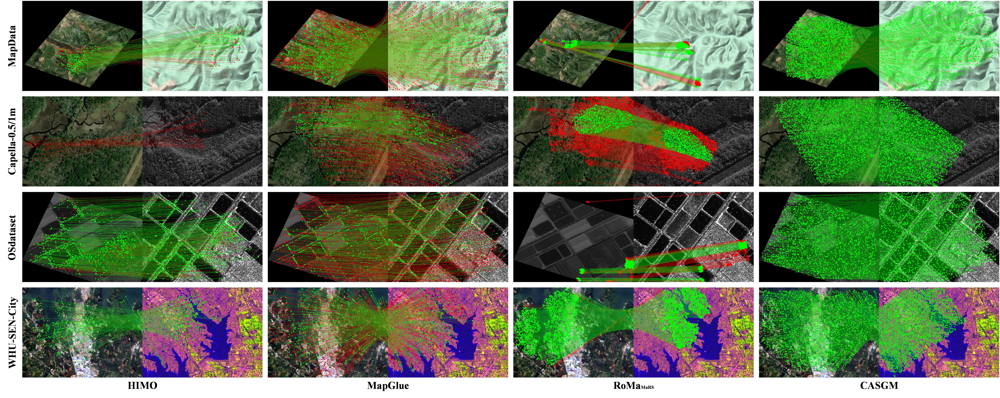
Fig.11 Generalization on easy (unseen regions, 1×).
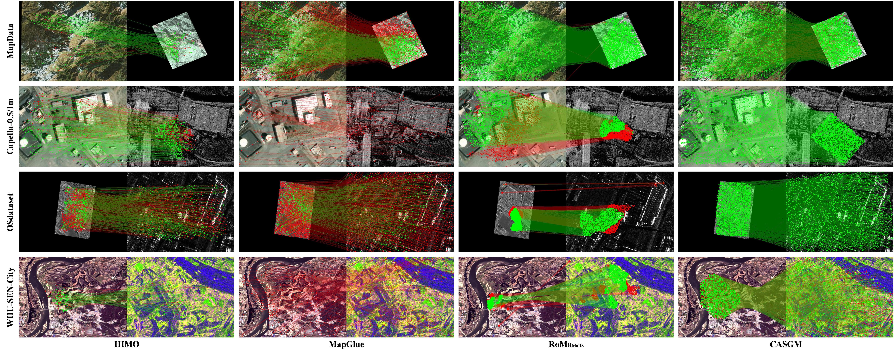
Fig.12 Generalization on hard (unseen regions, 2×).
Without retraining on unseen geographies, learned baselines lose density and drift in error, while CASGM preserves structured green correspondence fields. Because the co-visible prior is geometric rather than appearance-memorized, it transfers across sensors and landscapes ×the practical property for real deployment.
Under weak texture, repetitive patterns, and strong radiometric differences, global matchers hallucinate correspondences in non-overlapping zones. CASGM's mask gates those zones out first, so surviving matches concentrate where evidence exists. This is where the NCM/SR lead over the second-best method is largest.
SINGLE-COLUMN · Fig.14
11 · Efficiency
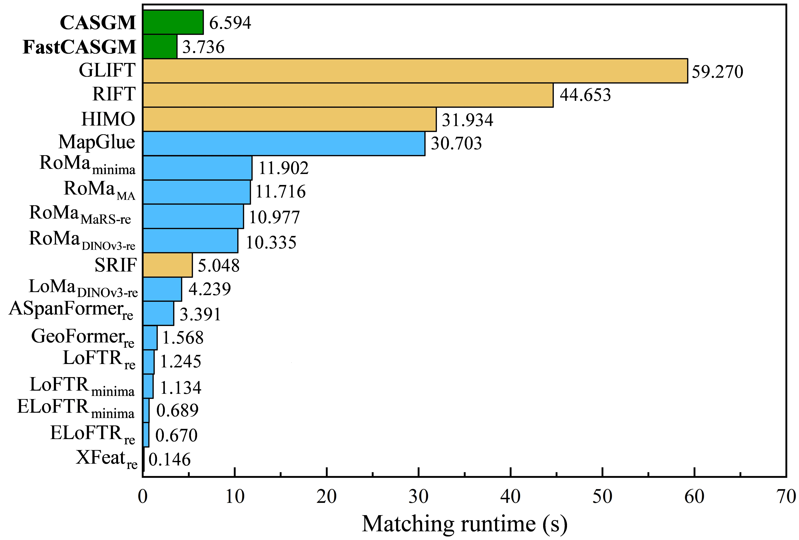
Fig.14 Inference time. Yellow = handcrafted, blue = learned baselines, green = ours.
Takeaway. Handcrafted methods (yellow) are slow per pair; heavy learned matchers (blue) cost more; CASGM (green) sits at a favorable speed–accuracy point.
Reason. Masking shrinks the correlation volume before fine matching, so the expensive high-resolution stages run on a fraction of the pixels ×faster and more accurate.
Method
Time (s)
NCM
Handcrafted
high
low
Learned baselines
medium–high
medium
CASGM
low
highest
Conclusion
By predicting where to match (CVM) before deciding how to match finely (CFM), CASGM turns large-scale optical–SAR registration with scale ratios up to 4× into a constrained, tractable problem ×state-of-the-art accuracy on GeoMS-OS with competitive speed and cross-region generalization. Code and dataset links are at the top of this page.